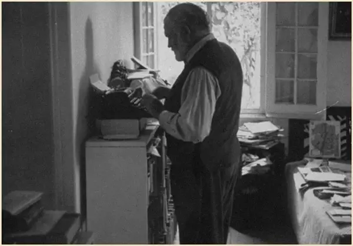

为什么我们的内心会焦虑？
本期分享人：古典
书单编辑作品，转载请联系作者
“书米”们早上好，两天没见了，不知大家假期玩得如何？
书单君自己过了一个创业以来最惬意的假期：陪女儿玩得很尽兴，也在放松的心境下读了两本书。
中秋之夜，我请“书米”们分享了自己“最难忘的一个中秋节”，当晚就收到了几百条回复。读着这些文字，我也被大家的喜乐悲欢所感染，有的还真把我看哭了。
别着急，我很快就会把其中的部分故事整理分享出来。
正如大家分享的各种故事一样，现实生活本就是有爱也有凄苦。
就在这个有关团圆的假期，我们还是听到了一个不幸的消息：青年演员乔任梁在上海家中意外离世。关于死因，目前可信度比较高的说法，是与抑郁症有关。
虽然对娱乐圈艺人不太熟，但看到这个消息时，书单君还是有点震惊。一是因为我朋友圈里的几个萌妹子曾多次提起乔任梁，印象中似乎是个开朗阳光的年轻偶像。二是因为“抑郁症”这个幽灵，这些年，从“哥哥”张国荣，到翻译家孙仲旭、学者江绪林，数不清它已夺去了多少生命。去年，书单君一位《南方周末》的老同事，也是因抑郁症离去……
抑郁症患者是人群中的相对少数，有关这种疾病的知识也并非书单君专业所长。但另一种常被认为是负面的心理情绪，却可能离我们每个人都很近，它就是“焦虑”。
可以说，焦虑是一种更流行的“时代情绪”，许多人会不可避免地沾染上它，并很难从中摆脱；严重的话，也可能会发展为焦虑抑郁症。
今天，书单君和大家分享职业规划师古典的一篇文章，也许，它能帮你认识自己焦躁的内心，并和它好好相处。
你不焦虑？因为你有病啊
而今天的中国内地和90年代的香港、50年代的美国很相似，都处在一个经济上升巨浪当中，过去的阶层和模式都被打乱，一切都充满机会和竞争。
因此，每个人都像“处于朝不同方向疾驶的车流”，四处都是机会和威胁，别人看上去好像都很风光，而你自己却选择太多、无所适从，暂时找不到人生的突破口。
▼比如，海明威就为了保持写作的极简和恰当而焦虑，所以他从来都是站着写作。

怎么和你的焦虑相处？
神经性焦虑是非常非常痛苦的事，人们为了逃避它，潜意识会搞出各种手段：上瘾（喝酒、吸毒等等），强迫症（比如经常性洗手、一定要关灯等强迫症），身体得病，深度抑郁……
所以，如果你是个天生就爱折腾的人，那就注定一辈子与焦虑为伍。
下面，我介绍7招和焦虑相处的方法，它们由浅入深，都是我亲身验证过的：
利用焦虑认识你自己
只有在嘴巴长疮、情绪失控、失眠后，你才可能认识到自己很焦虑。所以，这第一步叫做认知，也就是知道了自己已经陷入焦虑。
✎✎✎